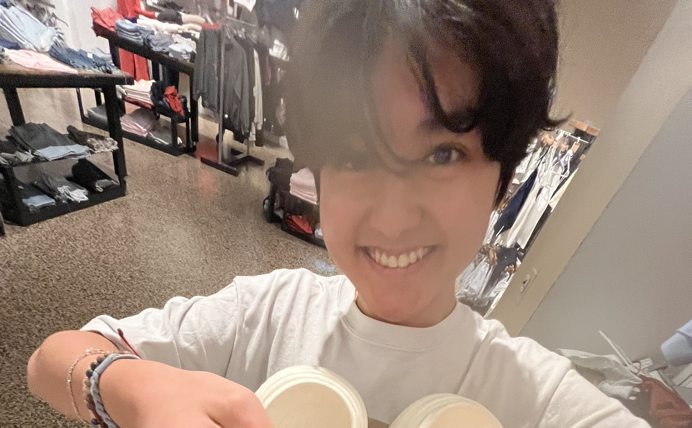

Eli Yoshizaki
Los Angeles Chapter Secretary
Hello I'm Eli Yoshizaki, serving as Secretary for our Los Angeles chapter. I handle communications, record-keeping, and ensure our chapter runs smoothly behind the scenes.
With my organizational skills, I've implemented systems that help us track our impact and maintain strong relationships with our partner organizations. I'm particularly proud of our chapter's donor recognition program.
When I'm not documenting our chapter's activities, I enjoy playing the piano and volunteering at animal shelters. My goal is to help Hearts for Healing make an even greater impact through efficient operations.